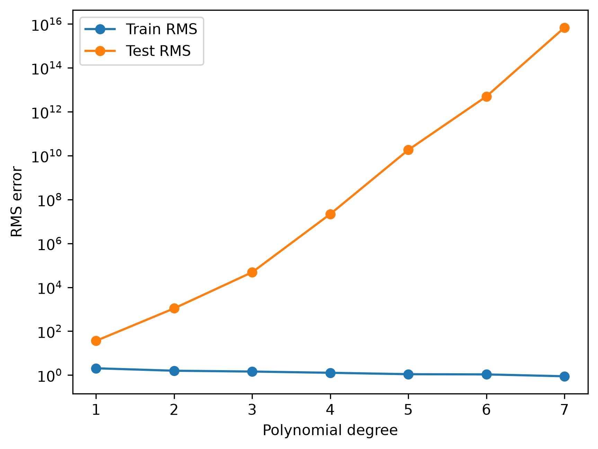
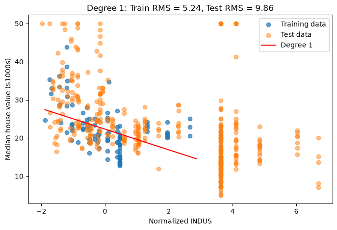
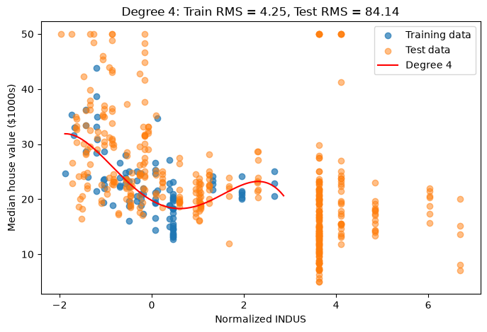
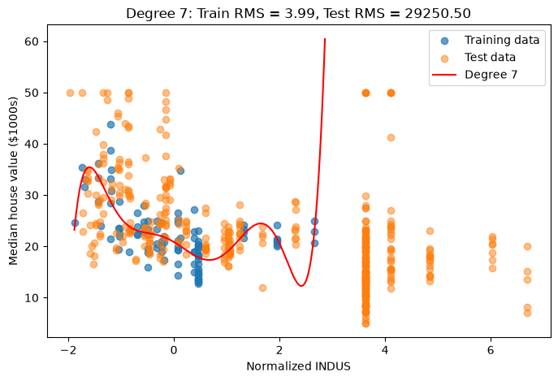
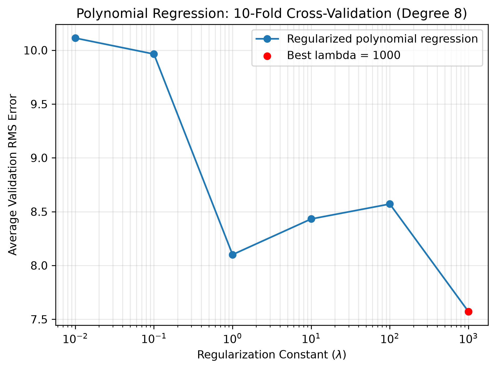
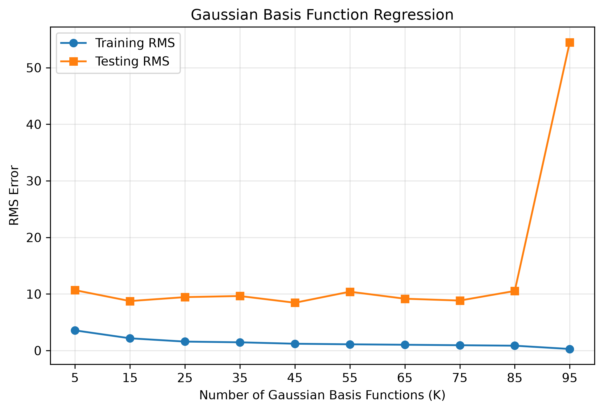
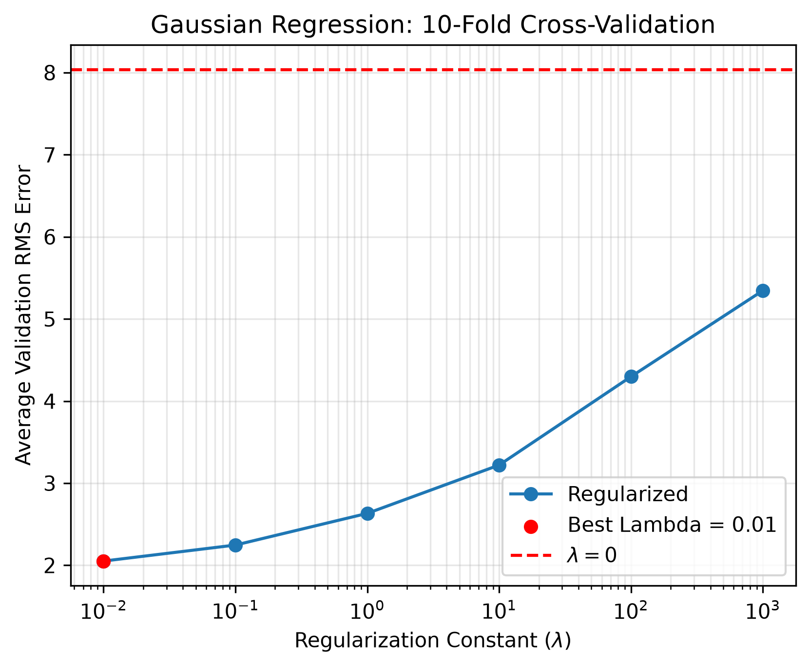

SYDE 572 - Assignment 2
Part 1: Polynomial Basis Function
Polynomial Regression
Our goal is to predict median house values based on features describing a town using polynomial regression.
Data Preparation
We used the first 100 data points for training and the remaining points for testing. We normalized the input features using the training data's mean $\mu$ and standard deviation $\sigma$ so that the features were on a similar scale.
$$x' = \frac{x-\mu}{\sigma}$$Polynomial Basis Functions
We raised each input feature to powers up to the selected polynomial degree, without combining different features. Here, $x_j$ represents the $j$-th input feature, and $k$ represents the power it is raised to.
$$\phi_{j,k}(\mathbf{x}) = x_j^k$$The model learns a weight for each basis function, along with a separate intercept $w_0$, to make its predictions:
$$\hat{y}(\mathbf{x}) = w_0 + \sum_{j=1}^{p}\sum_{k=1}^{d} w_{j,k}\phi_{j,k}(\mathbf{x})$$Evaluation
We evaluated each model using the root mean squared (RMS) error on both the training and testing data. The training error measures how well the model fits the training data, while the testing error measures how well it predicts unseen data. A lower RMS error indicates that the predictions are closer to the actual values.
$$\mathrm{RMS} = \sqrt{\frac{1}{n}\sum_{i=1}^{n}(\hat{y}_i-y_i)^2}$$Results
As the polynomial degree increased, the training error decreased because higher-degree models can fit the training data more closely. However, the testing error increased at higher degrees, suggesting overfitting. Degree 1 achieved the lowest testing RMS error among the models tested, indicating that the simpler model generalized better to unseen data.

Degree 1 Polynomial Regression
The learned bias is 22.3090. The weight for RM (average number of rooms) is 4.1956, while the weight for DIS (distance to employment centers) is 0.0107.
The positive RM weight makes sense because houses with more rooms tend to be worth more. Its relatively large weight also suggests that the number of rooms is one of the more important factors in our model. On the other hand, the DIS weight is very small, meaning distance to employment centers has little effect on our predictions.
All learned weights, including the bias, are listed below:
| Feature | Weight |
|---|---|
| Bias | 22.3090 |
| CRIM | -1.3380 |
| ZN | 0.1230 |
| INDUS | -0.5311 |
| CHAS | 0.0000 |
| NOX | 1.0027 |
| RM | 4.1956 |
| AGE | -2.1663 |
| DIS | 0.0107 |
| RAD | -0.1938 |
| TAX | -0.3486 |
| PTRATIO | 0.2613 |
| B | 0.1811 |
| LSTAT | 0.1488 |
Single Feature Polynomial Regression
We used the third feature, INDUS, to predict median house values using polynomial regression. Again, the first 100 samples were used for training, and the remaining samples were used for testing. The features were normalized using the mean and standard deviation of the training data.
We tested polynomial degrees 1 through 7 to compare models of different complexity. As shown in the table, training RMS generally decreased as the degree increased, while testing RMS increased significantly for higher degrees. This suggests overfitting, where more complex models fit the training data better but perform poorly on unseen data. From the table, we can see that degree 1 have the lowest testing RMS.
RMS Results by Polynomial Degree
| Degree | Training RMS | Testing RMS |
|---|---|---|
| 1 | 5.2393 | 9.8555 |
| 2 | 4.3528 | 18.5269 |
| 3 | 4.3524 | 17.2528 |
| 4 | 4.2537 | 84.1407 |
| 5 | 4.2266 | 176.8406 |
| 6 | 4.2139 | 1009.1254 |
| 7 | 3.9944 | 29250.4971 |



Polynomial Regression Regularization
We implemented L2-regularized regression (ridge regression) with a degree 8 polynomial, using only the 2nd feature from the first 100 data points. The model minimizes prediction errors while keeping the weights small:
$$\min_{\mathbf{w}}\sum_{i=1}^{n}(y_i-\hat{y}_i)^2+\lambda\sum_{j=1}^{8}w_j^2$$To find the best regularization constant, we used 10-fold cross-validation. We split the data into 10 folds, trained on 9 folds, and tested on the remaining fold. We repeated this for each fold and averaged the validation RMS errors for each $\lambda$ value.
Without regularization ($\lambda = 0$), the average validation RMS error was 178.3534. With $\lambda = 1000$, the error dropped to 7.5711, the lowest among all the values we tested. Therefore, we chose $\lambda = 1000$ for the lowest validation error.

Part 2: Gaussian Basis Function
Gaussian Regression
Our goal is to predict median house values based on features describing a town using Gaussian regression.
Data Preparation
We used the first 100 data points for training and the remaining points for testing. We normalized the input features using the training data's mean $\mu$ and standard deviation $\sigma$. We tested models with 5, 15, 25, ..., 95 Gaussian basis functions, selecting random training points as the centers.
$$x' = \frac{x-\mu}{\sigma}$$Gaussian Basis Functions
Each Gaussian basis function measures how close an input is to a selected center. Points closer to the center receive higher values, while points farther away receive values closer to zero.
$$\phi_j(\mathbf{x}) = \exp\left(-\frac{\|\mathbf{x}-\boldsymbol{\mu}_j\|^2}{2s^2}\right)$$Here, $\boldsymbol{\mu}_j$ is the center of the $j$-th basis function, and $s$ controls its width.
Fitting the Model
We transformed the input data using the Gaussian basis functions and applied least squares to find the weights that minimize the training error. We also included a column of ones for the intercept term and did not use regularization.
$$\hat{y}(\mathbf{x}) = w_0 + \sum_{j=1}^{K} w_j\phi_j(\mathbf{x})$$Evaluation
We evaluated each model using the root mean squared (RMS) error on both the training and testing data. The training error measures how well the model fits the training data, while the testing error measures how well it predicts unseen data. A lower RMS error means the predictions are closer to the actual values.
$$\mathrm{RMS} = \sqrt{\frac{1}{N}\sum_{i=1}^{N}(\hat{y}_i-y_i)^2}$$Results
As the number of basis functions increased, the training error generally decreased. However, the testing error fluctuated rather than steadily improving. The lowest testing RMS error was 8.4540 with 45 basis functions. With 95 basis functions, the training RMS error dropped to 0.2858, but the testing RMS error rose sharply to 54.4899. This suggests that the model with 95 basis functions overfit the training data and performed poorly on unseen data.

Gaussian Regression Regularization
We implemented L2-regularized Gaussian regression using the training points as Gaussian basis centers. The model minimizes prediction errors while keeping the weights small, excluding the intercept $w_0$ from regularization:
$$\min_{\mathbf{w}}\sum_{i=1}^{n}(y_i-\hat{y}_i)^2+\lambda\sum_{j=1}^{m}w_j^2$$To find the best regularization constant, we used 10-fold cross-validation. We split the first 100 data points into 10 folds, trained on 9 folds (90 points), and validated on the remaining fold (10 points). We normalized each fold using only its training data, calculated the Gaussian bandwidth using the training points, and averaged the validation RMS errors for each $\lambda$ value.
Without regularization ($\lambda = 0$), the average validation RMS error was 8.0366. With $\lambda = 0.01$, the error dropped to 2.0516, the lowest among all the values we tested. As $\lambda$ increased beyond 0.01, the validation error increased. Therefore, we chose $\lambda = 0.01$ as the best regularization constant.
